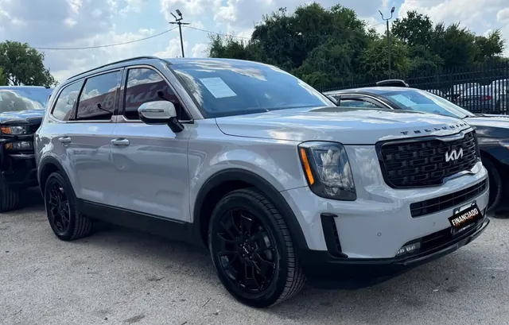

2022 Kia Telluride
Silver • ID CCH-06

1/2General
| Year | 2022 |
| Make | Kia |
| Model | Telluride |
| Type | SUV |
| Color | Silver |
| Mileage | 40,000 miles |
| Seats | 7 or 8 seats |
Engine & transmission
| Engine | 3.8L V6 GDI |
| Power | 291 hp |
| Torque | 262 lb-ft |
| Transmission | 8-speed automatic |
| Drivetrain | To be confirmed |
| Fuel | Gasoline |
Capacities
| Max towing | 5,000 lbs |
| Payload | 1,664 lbs |
| Fuel tank | 18.8 gallons |
| Fuel economy | 20/26 MPG (city/highway) |
Dimensions
| Length | 196.9 inches |
| Width | 78.3 inches |
| Height | 68.9 inches |
| Wheelbase | 114.2 inches |
Body
| Stock wheels | 18 inches |
Visible in the photos
- 3 rows
- Black wheels
- Blacked-out trim
Great for
Families who want 3 rows in an SUV that's easier to drive and park in the city.
Specs for this model/trim per manufacturer and automotive media. Confirm this unit’s exact specs with the dealer.
Único motor del modelo según Kia (ficha técnica MY22) y CarBuzz: 3.8L V6 GDI, 291 hp / 262 lb-pie, automática de 8. Tracción no confirmada: FWD de serie, AWD opcional.
Sin trim en el título: se usa la versión base LX FWD según datos del fabricante/EPA. / No trim in title: base LX FWD version used per manufacturer/EPA data.